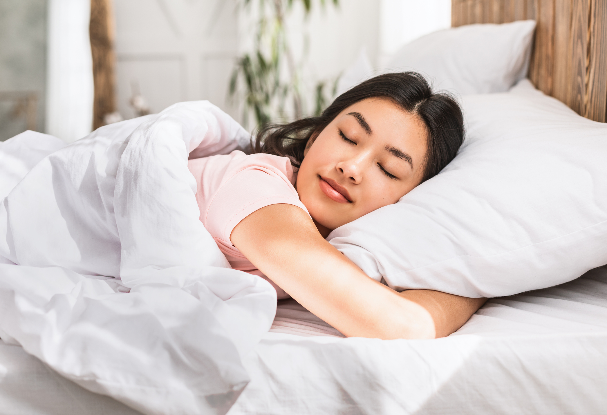

1. Stay Hydrated

Water is essential for maintaining overall health and well-being, as it plays a crucial role in nearly every bodily function. Comprising about 60% of the human body, water supports digestion, circulation, and temperature regulation. It aids in the absorption of nutrients, helps flush out waste through the kidneys, and maintains cellular health. Adequate hydration is vital for optimal physical performance, cognitive function, and skin health. Moreover, drinking enough water can aid in weight management, improve mood, and prevent dehydration-related issues such as kidney stones and constipation. Aim to drink at least eight 8-ounce glasses of water daily, or about 2 liters.
2. Eat a Balanced Diet
A well-rounded diet is key to maintaining good health. Focus on eating a variety of nutrient-dense foods, including:
- Fruits and Vegetables: Rich in vitamins, minerals, and antioxidants, aim to fill half your plate with these colorful foods.
- Whole Grains: Opt for whole grains like brown rice, quinoa, and whole wheat bread over refined grains to boost fiber intake and aid digestion.
- Lean Proteins: Incorporate sources such as chicken, fish, beans, and legumes to support muscle growth and repair.
- Healthy Fats: Include sources of unsaturated fats like avocados, nuts, and olive oil, while limiting saturated and trans fats.
3. Exercise Regularly

Regular physical activity offers numerous health benefits, from improving cardiovascular health to enhancing mood. The American Heart Association recommends at least 150 minutes of moderate aerobic activity or 75 minutes of vigorous activity per week, combined with muscle-strengthening exercises on two or more days. Activities like walking, jogging, cycling, and strength training can be incorporated into your routine to stay active and fit.
About Exercise4. Prioritize Quality Sleep
Adequate sleep is crucial for overall health and well-being. Aim for 7-9 hours of quality sleep each night to support physical and mental health. Establish a consistent sleep schedule, create a relaxing bedtime routine, and make your sleep environment comfortable and free from distractions to improve sleep quality.
5. Manage Stress
Chronic stress can negatively impact both physical and mental health. Incorporate stress management techniques into your daily routine to maintain balance:
- Mindfulness and Meditation: Practices like mindfulness meditation can help reduce stress and improve focus.
- Physical Activity: Regular exercise can help lower stress levels and improve mood.
- Hobbies and Leisure Activities: Engage in activities you enjoy, whether it’s reading, gardening, or listening to music, to unwind and relieve stress.
6. Avoid Harmful Habits

Certain behaviors can undermine your health and well-being. To promote a healthier lifestyle, consider:
- Limiting Alcohol Consumption: Stick to moderate drinking guidelines (up to one drink per day for women and two for men).
- Avoiding Tobacco: Smoking and tobacco use are major risk factors for various diseases, including cancer and heart disease. Seek support to quit if necessary.
- Reducing Processed Foods: Minimize intake of foods high in added sugars, salt, and unhealthy fats.
7. Stay Socially Connected

Strong social connections contribute to mental and emotional health. Maintain relationships with family and friends, participate in community activities, and seek support when needed. Social engagement can provide emotional support, reduce feelings of loneliness, and contribute to overall well-being.
8. Regular Health Check-ups
Routine health check-ups and screenings are essential for early detection and prevention of health issues. Schedule regular visits with your healthcare provider, stay up-to-date with vaccinations, and get recommended screenings based on your age, gender, and health history.